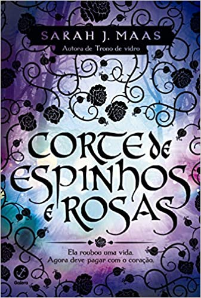
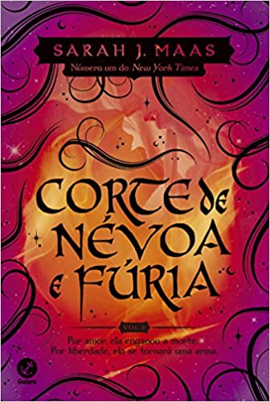
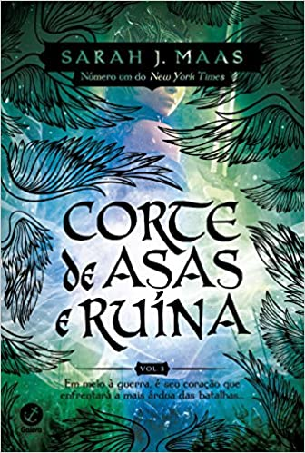
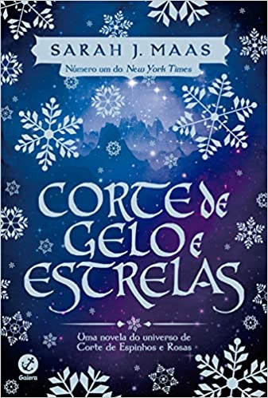
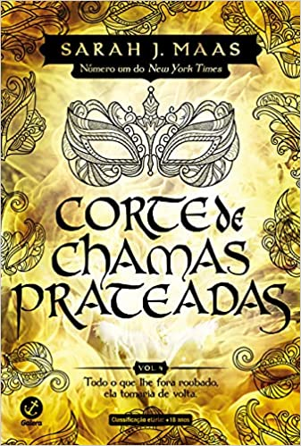

Corte de espinhos e rosas- ACOTAR
Ela roubou uma vida. Agora deve pagar com o coração. Corte de espinhos e rosas é primeiro volume da série best-seller, da mesma autora da saga Trono de vidro. Num mundo dividido uma muralha mágica separa duas espécies. De um lado, os feéricos vivem dentro de suas fronteiras cheias de beleza e mistério; do outro, os humanos possuem apenas medo, desconfiança e dificuldades.Feyre, filha de um casal de mercadores humanos e falidos, se torna caçadora para sustentar a família. Dura como as flechas que carrega, letal como sua pontaria, ela abandona as fantasias de garota e as troca pela árdua vida nas florestas ao redor de sua aldeia. Sua única alegria é observar as cores e sonhar em capturá-las. Mas, na floresta, coberta de neve tudo é branco e árido; como o ódio pelos feéricos que carrega no coração; Como as telas que não pode comprar ou colorir. Até que um enorme lobo cruza seu caminho... Sem hesitar, Feyre dispara... uma flecha. Um ato de rebelião. Após matar o lobo, uma criatura bestial surge exigindo uma reparação. Arrastada para além do muro, para uma terra mágica e traiçoeira - que ela só conhece por meio de lendas -, a jovem descobre que seu captor não é um animal, mas Tamlin, Grão Senhor da Terra Primaveril. Um feérico com um segredo, escondido sob uma máscara. Ela descobre ainda que o então animal que havia assassinado era, na verdade, uma criatura mágica, uma fada zoomórfica transformada em lobo. À medida que ela descobre mais sobre este mundo onde a magia impera, seus sentimentos por Tamlin passam da mais pura hostilidade até uma paixão avassaladora. Enquanto isso, uma sinistra e antiga sombra avança sobre o mundo das fadas e Feyre deve provar seu amor para detê-la ou Tamlin e seu povo estarão condenados.

Corte de névoa e fúria- ACOWAR
Corte de névoa e fúria é o esperado segundo volume da saga iniciada em Corte de espinhos e rosas, da mesma autora da série Trono de vidro. Neste livro, seguimos a saga de Feyre Archeron, que morreu Sob a Montanha. Nas garras de Amarantha, a jovem humana que ansiava por amor e proteção deixou de existir. Das cinzas de seu velho eu, Feyre Quebradora da Maldição foi Feita - com poderes de sete Grão-Feéricos... e uma vontade tão férrea quanto o metal temido por eles.Seu coração no entanto, permanece humano, vulnerável. Incapaz de esquecer o que sofreu para libertar o povo de Tamlin... e o pacto firmado com Rhysand, senhor da Corte Noturna. Mas mesmo assim, Feyre se esforça para reconstruir o lar que criou na Corte Primaveril. Então por que é ao lado de Rhys que ela se sente mais plena?Peça-chave num jogo que desconhece. Feyre deve aprender rapidamente do que á capaz. E curar sua alma partida. Pois um antigo mal, muito pior que Amarantha, se agita no horizonte... um que ameaça não apenas os feéricos, mas o mundo humano e a muralha também.Enquanto navega por uma teia de intrigas políticas, paixões e poder, sufocada por Tamlin, Feyre precisa decidir o que deseja: amor ou liberdade?Corte de névoa e fúria apresenta uma história de emoção absoluta. Feyre aprende como se tornar uma verdadeira guerreira usando as ferramentas que possui. Um novo elenco de personagens dá vida ao reino. Cassian e Azriel - os irmãos de armas de Rhys, o sempre poderoso e charmoso Morrigan e o mortal, sarcástico, Amren.
Corte de asas e ruína- ACOMAF
Corte de asas e ruína é o terceiro volume da série best-seller Corte de Espinhos e Rosas, da mesma autora da saga Trono de vidro. Seguindo os acontecimentos do volume anterior, Corte de névoa e fúria, acompanhamos a saga de Feyre Archeon, que suportou a fome, o frio e a desesperança, atravessou a Montanha e foi Sob a Montanha. Reclamou seu amor, quebrou a maldição e livrou o povo feérico da mais terrível ameaça... ou não? Amarantha pode ter sido aniquilada, mas o rei de Hybern pretende usar o Caldeirão para moldar um novo tempo; uma época de trevas e escravidão. A guerra se aproxima, um conflito que promete devastar Prythian. Em meio à Corte Primaveril, num perigoso jogo de intrigas e mentiras, a Grã-Senhora da Corte Noturna esconde seu laço de parceria e sua verdadeira lealdade. Longe de sua corte, longe de seu Grão-Senhor e verdadeiro amor, ela reúne informações, na esperança de vencer Hybern.Tamlin está fazendo acordos com o invasor, Jurian recuperou suas forças e as rainhas humanas prometem se alinhar aos desejos de Hybern em troca de imortalidade. O exército inimigo parece imbatível. Mas o sonho de Velaris é como um farol em meio às trevas. O ideal de um mundo mais justoEnquanto isso Feyre e seus amigos precisam aprender em quais Grãos-Senhores confiar, e procurar aliados nos mais improváveis lugares. Porém, a Quebradora da Maldição ainda tem uma ou duas cartas na manga antes que sua ilha queime.Sarah J. Maas faz questão de salientar neste livro que Rhysand e Feyre são iguais. A protagonista não é retratada como uma donzela fraca em perigo, ela realmente é uma guerreira forte e determinada!
Corte de gelo e estrelas- ACOFAS
A série best seller Corte de Espinhos e Rosas, da mesma autora de Trono de Vidro, ganha um spin-off em Corte de gelo e estrelas, volume que tem início após os acontecimentos de Corte de asas e ruína. Para Feyre Archeon, ser Grã-Senhora ainda é uma novidade, e ela precisa descobrir seu papel enquanto luta para reconstruir uma Velaris devastada pela guerra contra Hybern. A muralha que separava o mundo feérico do mundo humano se foi, Keir está prestes a deixar a Corte dos Pesadelos para uma visita à cidade de Luz Estelar e os illyrianos parecem insatisfeitos com o resultado da guerra.Divididos entre as tentativas de retomar suas vidas após a grande batalha, as responsabilidades de liderar a Corte Noturna e a preparação para o rigoroso inverno, o trabalho de Feyre, Rhys e seu Círculo Íntimo parece nunca ter fim. Todos seguem tentando manter a paz, conquistada a base de muito esforço e perdas pessoais, após a queda da muralha. Mas com o Solstício de Inverno finalmente se aproximando, chega também a promessa de descanso conquistado com muito esforço.No entanto, nem as festividades conseguem impedir que as sombras da guerra se aproximem.Enquanto vive primeiro Solstício como Grã-Senhora, Feyre ainda lida com os horrores do passado recente e percebe que seu parceiro e sua família têm mais cicatrizes do que ela esperava - cicatrizes que podem impactar o futuro, e a paz, de sua Corte.Corte de gelo e estrelas é derivado do universo de Corte de Espinhos e Rosas, e tem como foco principal os seus personagens, proporcionando aos fãs da série, uma visão geral do universo após o final da primeira trilogia. Contado a partir de perspectivas alternadas, a narrativa permite que o leitor reencontre Feyre, Rhysand, Cassian, Mor, Elain, Nesta, Azriel e Amren, enquanto tentam encontrar o caminho para o novo mundo pós-guerra.
Corte de chamas prateadas- ACOSF
A guerra finalmente chegou ao fim, e a irmã de Feyre, Nestha, brilha em Corte de chamas prateadas, a sedutora e poderosa sequência da aclamada série Corte de espinhos e rosas. A 1ª edição inclui dois contos extras, um da Feyre e um do Azriel. Um conteúdo inédito e exclusivo da edição brasileira do livro para os fãs da série. Nestha Archeron sempre foi orgulhosa, irritável e lenta em perdoar. Ter sido Feita pelo Caldeirão não tornou sua personalidade mais doce. Mas o que poucos sabem é que, por trás da fachada de força, Nestha carrega uma dor que a está corroendo: o arrependimento por não ter feito nada para ajudar a família quando caíram na pobreza e por não ter sido capaz de salvar o pai...Desde que foi forçada a entrar no Caldeirão e se tornar Grã-Feérica contra sua vontade, ela lutou para encontrar um lugar para si mesma dentro do mundo estranho e mortal que habita. No entanto, ela não consegue superar os horrores da guerra com Hybern e tudo o que perdeu nela.A única pessoa que a incendeia, mais do que qualquer outra, é Cassian, o guerreiro com cicatrizes de batalha cuja posição na Corte Noturna de Rhysand e Feyre o mantém constantemente na órbita de Nestha. Mas seu temperamento não é a única coisa que Cassian inflama. O fogo entre eles é inegável, e fica ainda mais quente quando são forçados a ficarem próximos um do outro.Como se não bastasse, a possibilidade de uma nova guerra desponta no horizonte e, enquanto isso, as traiçoeiras rainhas humanas que retornaram ao continente durante a última guerra forjaram uma perigosa nova aliança, ameaçando a frágil paz que se instalou nos reinos... E a chave para detê-los pode depender de Cassian e Nestha enfrentarem seu passado assustador.Contra o pano de fundo arrebatador de um mundo devastado pela guerra e atormentado pela incerteza, Nestha e Cassian percebem que apenas juntos podem triunfar, e lutam contra monstros por dentro e por fora enquanto buscam aceitação – e cura – nos braços um do outro.
Segue aqui vídeos para caso tenha gostado do assunto:
Sobre a autora
Sarah Janet Maas assina como Sarah J. Maas é uma escritora americana de fantasia, sua obra alcançou o patamar de best-seller do New York Times e USA Today.
Seu livro de estréia: Trono de Vidro, foi publicado em português em 2013 pela Galera Record.
Caso tenha se interessado, segue abaixo links para a compra dos livros:
Primeiro livro
Segundo livro
Terceiro livro
Livro extra
Quarto livro
O que é um agente conversacional?
Tais sistemas, denominados também de Agentes Conversacionais (ACs), são projetados para interpretar a pergunta (ou intervenção) do usuário, e oferecer respostas diretas, sempre buscando manter a coerência do diálogo e a ilusão de que o interlocutor está conversando com outro ser humano.Meu agente conversacional
Meu agente conversacional fala sobre átomos, é um assunto bem interessante e na época que eu elaborei as perguntas estava aprendendo sobre esse assunto nas aulas de física.
Coisas que meu agente conversacional sabe:
- o que é um átomo
- modelo atômico
- principais teorias atômicas
- características de um átomo
- para que serve um átomo
- estrutura de um átomo
Caso tenha ficado com curiosidade e queira acessar o agente conversacional:
Clique aqui :)